可换相机舱
根据赛道光照与视角需求快速切换相机，无需拆解整机。
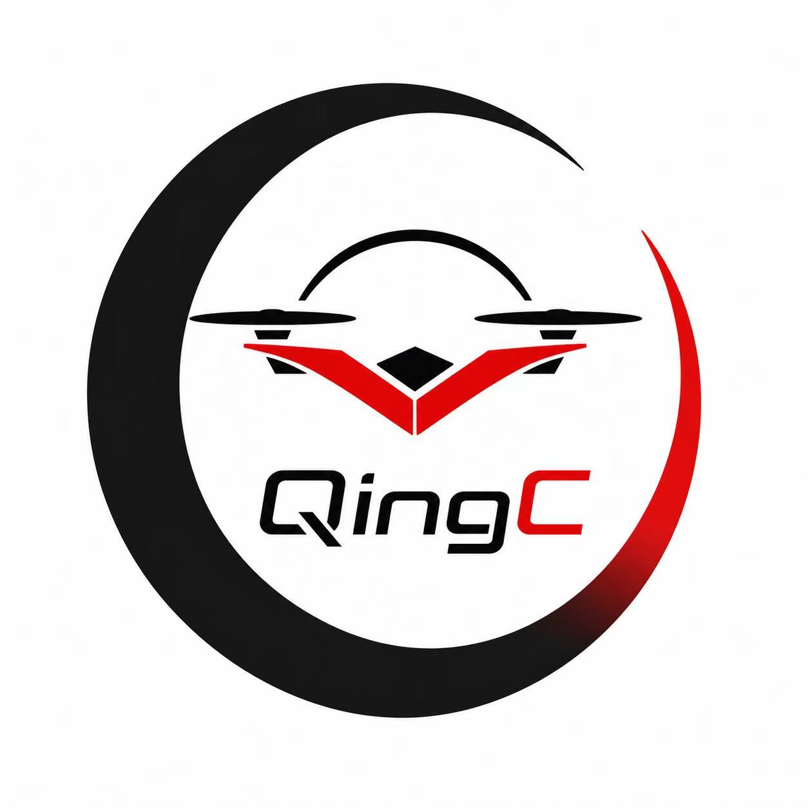
擎苍QINGCANG / FPV SYSTEMSQC-03 MODULAR 3-INCH FPV PLATFORM
擎苍是一套围绕快速换装打造的 3D 打印 FPV 平台。无需焊接，无需工具，只替换真正损坏的部分。
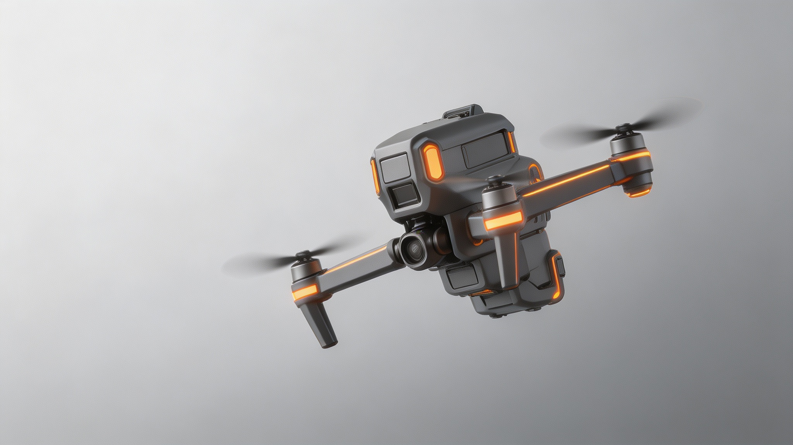
00 / THE MISSION
脆弱的一体化结构、焊接门槛和互不兼容的零件生态，让维修成本、学习成本和等待时间不断累积。擎苍重新设计的不是一架飞机，而是“损坏之后如何继续飞”。
01 / CLICK—LOCK SYSTEM
精密燕尾导轨完成机械定位，球头锁止提供刚性连接，镀金 Pogo Pin 同步传输电力与数据。咔哒一声，立即归队。
根据赛道光照与视角需求快速切换相机，无需拆解整机。
核心 PCB 模组在十秒内完成替换，把维修台留在过去。
机臂与框架按需打印，只更换受损区域，也允许自由改型。
在轻量竞速和长续航之间切换，让一套平台覆盖不同任务。
燕尾导向与球头锁止，确保每次装配都精准、稳定、无工具。
可靠传输电力与数据，不焊接，也不牺牲快速维护能力。
碳纤维增强尼龙，在重量、韧性与可制造性之间取得平衡。
生成式晶格结构可降低约 40% 重量，同时按需快速迭代。
02 / GYRO SPECTRUM TEST
陀螺仪频谱把飞行中的结构振动转化为可见信号。峰值越集中、宽频噪声越少，通常意味着飞控需要处理的机械振动干扰更少。
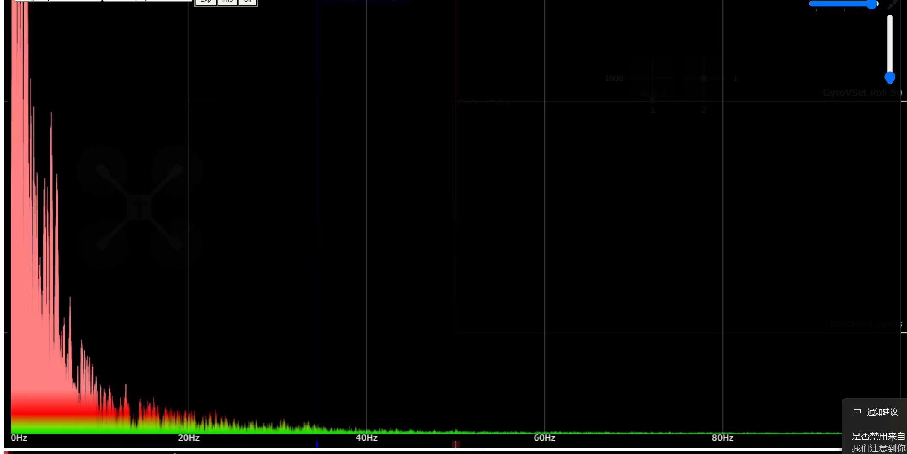
QINGCANG PROTOTYPE当前测试截图中，主要振动能量集中在低频区域，并在约 20–40 Hz 后快速衰减；可见频段内未出现类似对比机架的突出中高频窄带峰。
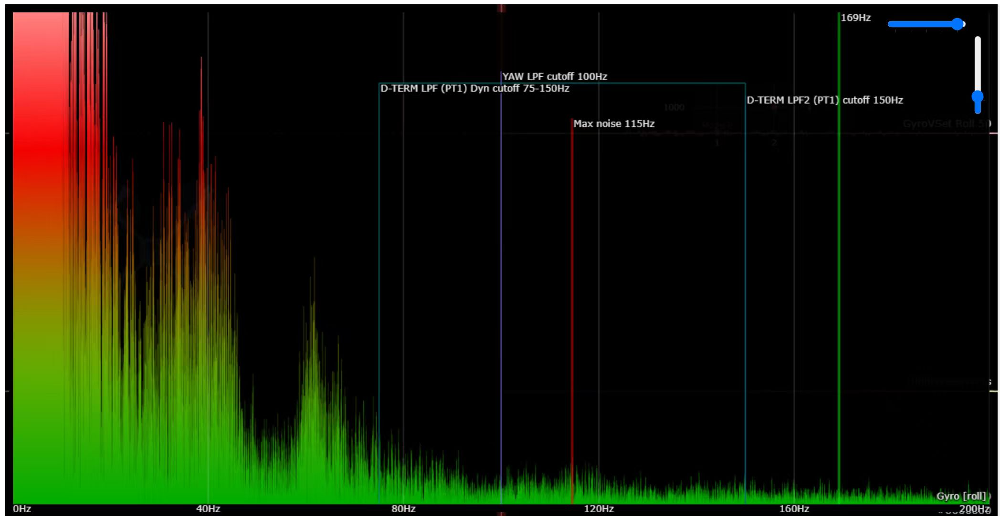
CARBON-FIBER REFERENCE该对比截图呈现更宽的低至中频能量分布，并标出了约 115 Hz 的明显噪声峰；这意味着飞控滤波需要面对更复杂的振动成分。
擎苍样本的可见振动能量更早回落至较低水平。
当前截图中未观察到对比样本约 115 Hz 一类的显著窄带峰。
较简单的频谱通常有利于滤波与 PID 调校，但仍需更多同条件测试验证。
测试说明：以上结论仅基于当前两组陀螺仪频谱截图的可见特征。两图显示频宽不同，且电机、桨叶、转速、飞控参数、采样与滤波设置尚未完全统一，因此不用于得出材料或机架性能的绝对结论。后续将通过同动力、同参数、同工况的重复测试建立可量化结果。
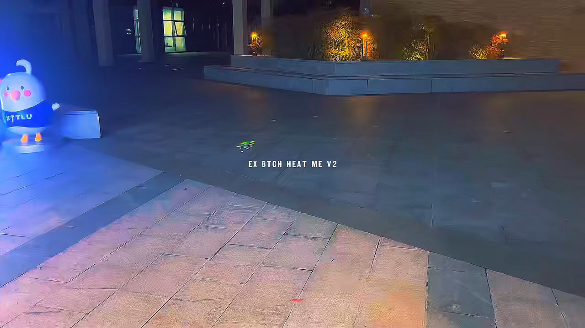
03 / PILOT EXPERIENCE
竞速玩家要性能，也要快速维修；自由式玩家要耐用，也要个性；新手需要更低的进入门槛。擎苍让每一种飞行风格都从同一套开放底座开始。
04 / BUILD YOUR FLIGHT
选择你的飞行方式。配置器会实时计算重量、敏捷度、续航和预计价格。
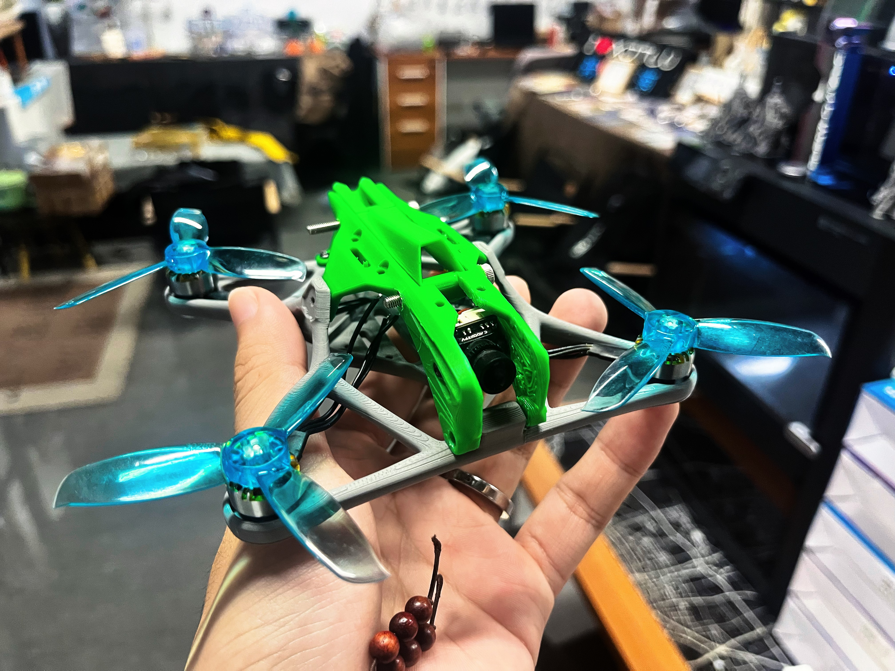
05 / PRINTED ON DEMAND
3D 打印让结构改型、备件生产与小批量迭代发生在同一条链路中。昨天的飞行反馈，可以成为今天的新机臂。
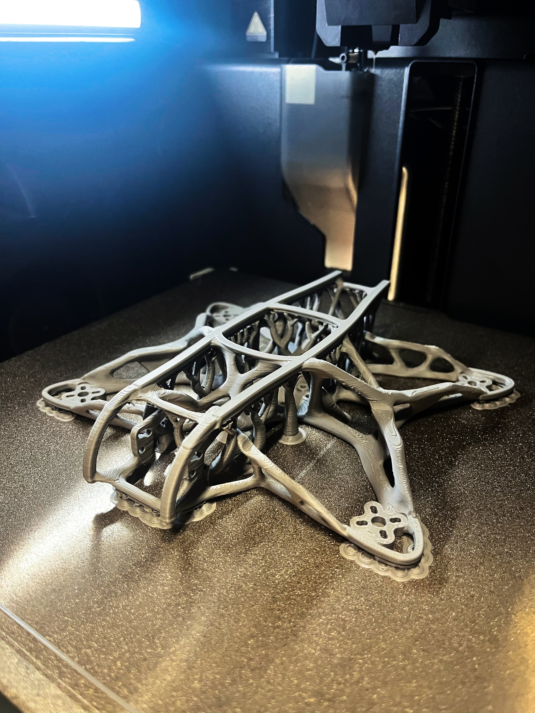
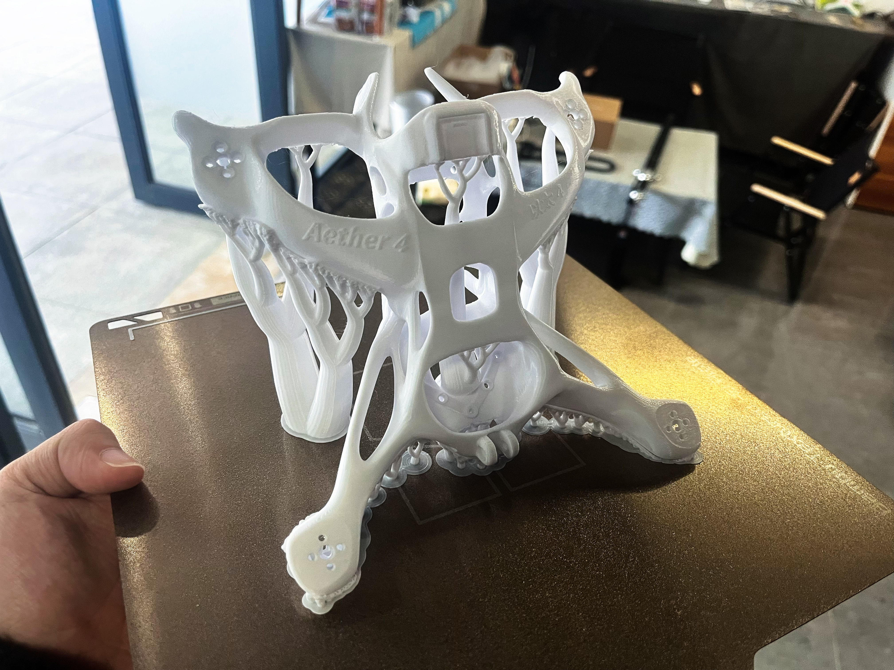
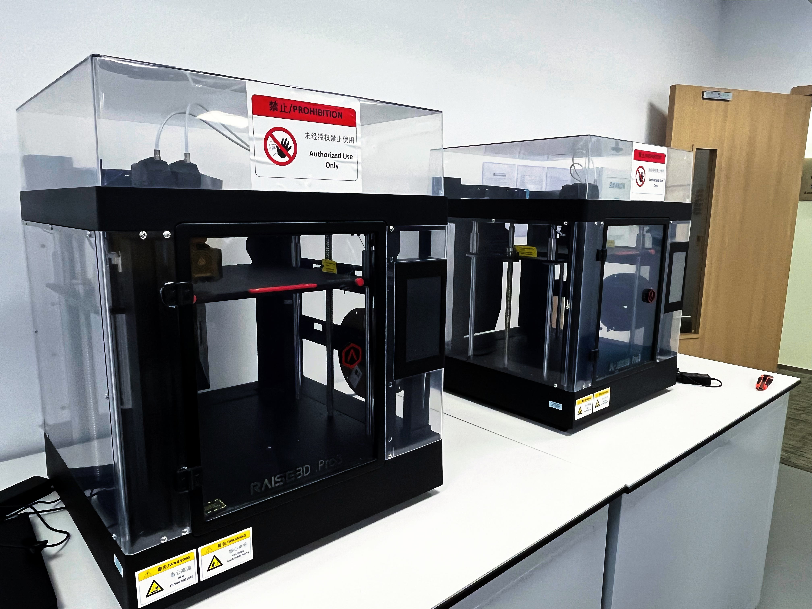
06 / INTERACTIVE ENGINEERING MODEL
这是擎苍五寸机机身的真实 STL 工程模型。拖动观察整体构型，滚轮或双指缩放，近距离查看一体化机臂、中心舱与结构连接关系。
07 / OPEN SKY NETWORK
擎苍不仅出售硬件，也建立由飞手、设计师和创客共同进化的模块市场。每个 STL、每次测试和每种改造，都能成为平台的一部分。
08 / FROM PROTOTYPE TO SKY
3 英寸 FPV 功能原型已完成并通过多次飞行与特技测试。下一阶段将集中完成快拆接口、材料验证和社区压力测试。
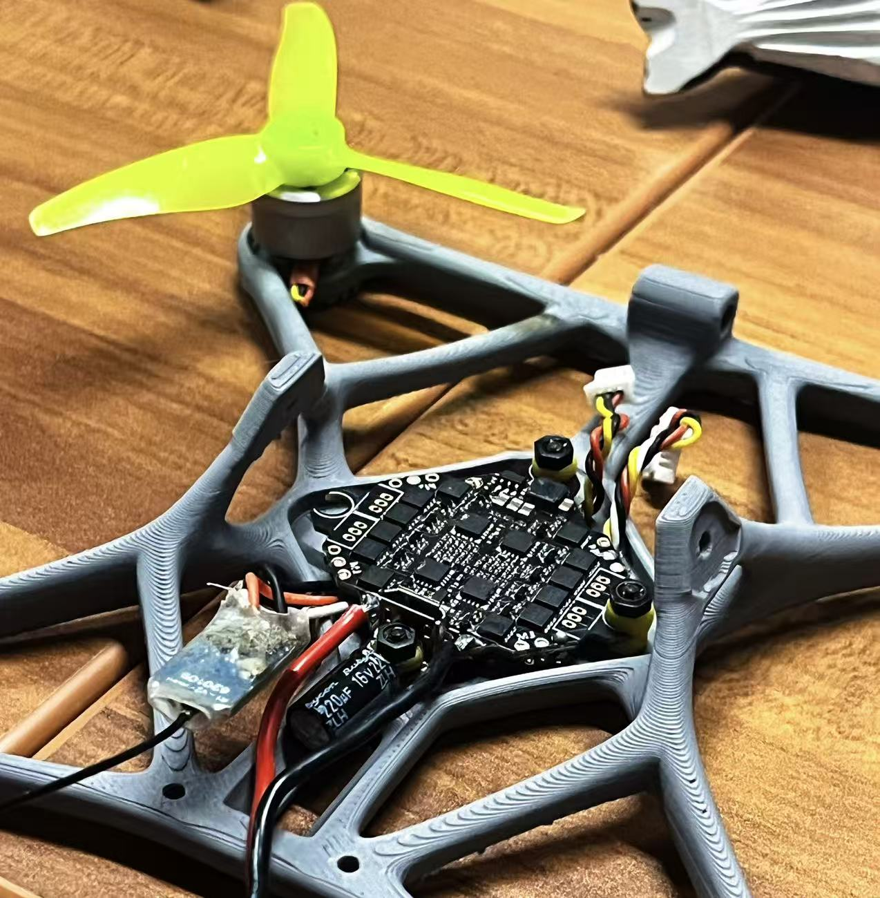
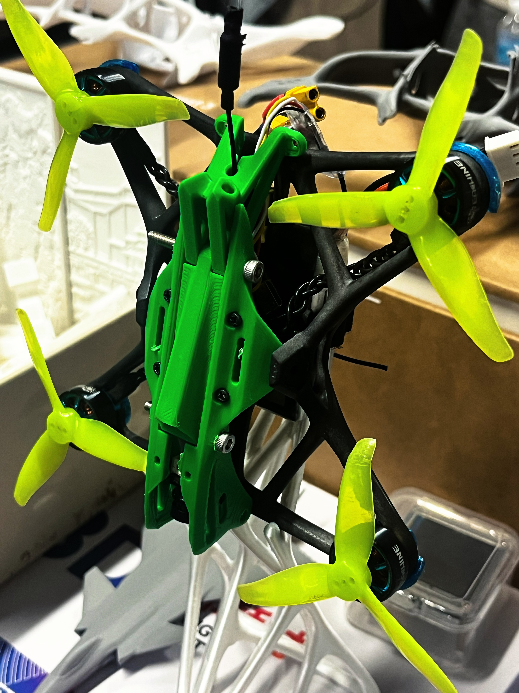
基础飞行测试完成
多项空中特技验证
快拆模块工程化中
接口设计、材料测试与固件开发
招募飞手验证强度与维护效率
建立零部件与打印合作伙伴体系
启动众筹与首批预订
扩展产能并上线数字配件生态
09 / JOIN THE FIRST FORMATION
我们正在寻找 FPV 飞手、结构设计师、3D 打印伙伴与早期支持者，共同把模块化飞行平台推向真实赛道。
QC / 03